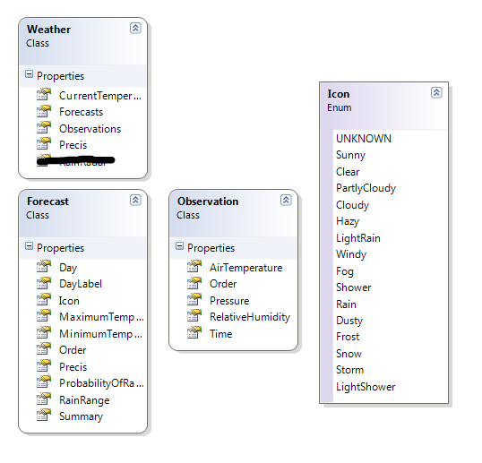
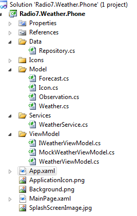

Posted on Tuesday January 2012
In this case I'm going native. XML manipulation in Javascript is not too much fun. Plus I already have code in C# to pull and clean up the data into a reasonable format. Just need to port it to SL, remembering that all requests are going to be async and so on.
The model looks something like:

A repository will return an instance of the model, checking the cache or pulling a fresh one. I'm making it the repositories responsibility to work out where to get the data from, which sounds pretty reasonable to me.
Thinking a little bit I may have some kind of app level message/event thing going on.
When the app starts it should provide the model immediately from the cache. Then asynchronously pull a fresh copy if the cache is expired. The raise an event to tell the view to update. If we have no cache then what? Return an empty model with a "loading" message for the summary and go from there.
MVVM is a very prudent pattern to use in SL, particularly this app. The rich binding makes MVVM rock! I also find it makes life so much simpler if you can build the UI against a view model - it's separation of concerns, SRP and just makes things flow.
I'll often use a RelayCommand or DelegateCommand, frequently just rip that class out of Prism or some framework and drop it in. I'll do the same here, ripping bits from GalaSoft's MVVM Lite toolkit. If I find I'm using the toolkit a lot then I'll take the whole thing on as a dependency, but for now let’s see how we go.
Ideally we want to be able to configure some DI/IOC and let it do it's thing, but...
I am not too familar with the phone startup lifecycle (yet). Statrtup is controlled in the usual way, with the main entry point being the App constructor. There are a couple of methods with warnings Do not add any additional code to this method which look like the best place to configure this stuff:
// Do not add any additional code to this method
private void InitializePhoneApplication()
{
if (phoneApplicationInitialized)
return;
// Create the frame but don't set it as RootVisual yet; this allows the splash
// screen to remain active until the application is ready to render.
RootFrame = new PhoneApplicationFrame();
RootFrame.Navigated += CompleteInitializePhoneApplication;
// Handle navigation failures
RootFrame.NavigationFailed += RootFrame_NavigationFailed;
// Ensure we don't initialize again
phoneApplicationInitialized = true;
}
// Do not add any additional code to this method
private void CompleteInitializePhoneApplication(object sender, NavigationEventArgs e)
{
// Set the root visual to allow the application to render
if (RootVisual != RootFrame)
RootVisual = RootFrame;
// Remove this handler since it is no longer needed
RootFrame.Navigated -= CompleteInitializePhoneApplication;
}
This sets up a callback for Navigation complete, and sets the RootVisual for the app to PhoneApplicationFrame.
There are some scary warnings about messing with these startup objects. Coupled with my inexperience I'm just going to skip it and set my View dataContext in the code behind of the view. It's not ideal, but oh well.
public partial class MainPage : PhoneApplicationPage
{
// Constructor
public MainPage()
{
InitializeComponent();
WeatherService.Current.WeatherChanged += new EventHandler(Current_WeatherChanged);
WeatherService.Current.Initialize();
}
void Current_WeatherChanged(object sender, EventArgs e)
{
this.SetValue(MainPage.DataContextProperty, WeatherService.Current.WeatherViewModel);
}
}
As you can see, I've chucked in an application service to handle refreshing the view model as the cache expires. If the model changes then the view model should update automatically to reflect this. So far all the service does is return a mock IWeatherViewModel. This will let me set up the view and the bindings and make the pretty.
The current solution is looking something like:
